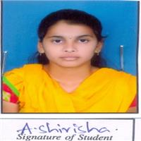

|  |
|
Seeking an entry-level opportuntity with an estemeed organization.
Where i can utilize my skills and enhance learning
in the field of work.
Capable of masterning new technologies.
B.TECH from KAKATIYA INSTITUTE OF TECHNOLOGY AND SCIENCE in 2020 CGPA 8.10
DIPLOMA from GOVT.POLYTECHNIC WGL in 2017 with 80.21
SSC from SPUTNIK HIGH SCHOOL in 2014 with 8.5
College Information Chatbot System which typically provides a chat user interface, allowing the user to type commands or queries and will get replies using an effective graphical interface, as if real person is talking to user as well as text to speech response.
It is an entertaining mind game which consists of letters with different colors arranged randomly on it. Color Hunt is just like a Brain Activity. It is one of the mind games project which works on speeding up your Thought process.
|
|
16-9-747,Shivanagar, Warangal, Telangana, Pincode-506002.
shirisha.abbaraboina@gmail.com
7893100318